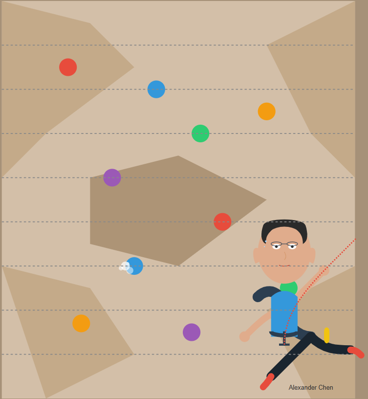

Hobbies Page
Alexander's Interests & Activities
When not immersed in code, Alexander enjoys a variety of activities that help him maintain balance and creativity:
Outdoor Activities
- Trail running through the Pacific Northwest forests
- Rock climbing (both indoor and outdoor)
- Weekend backpacking trips in the Cascades

Creative Pursuits
- Playing acoustic guitar and composing music
- Amateur photography specializing in landscapes
- Building mechanical keyboards from scratch
Intellectual Interests
- Contributing to open-source projects
- Reading science fiction and technical literature
- Attending local tech meetups and conferences
Culinary Experiences
- Brewing craft beer at home
- Exploring international cuisines through cooking
- Finding hidden gem restaurants around the city
Back to Homepage
Contact Me